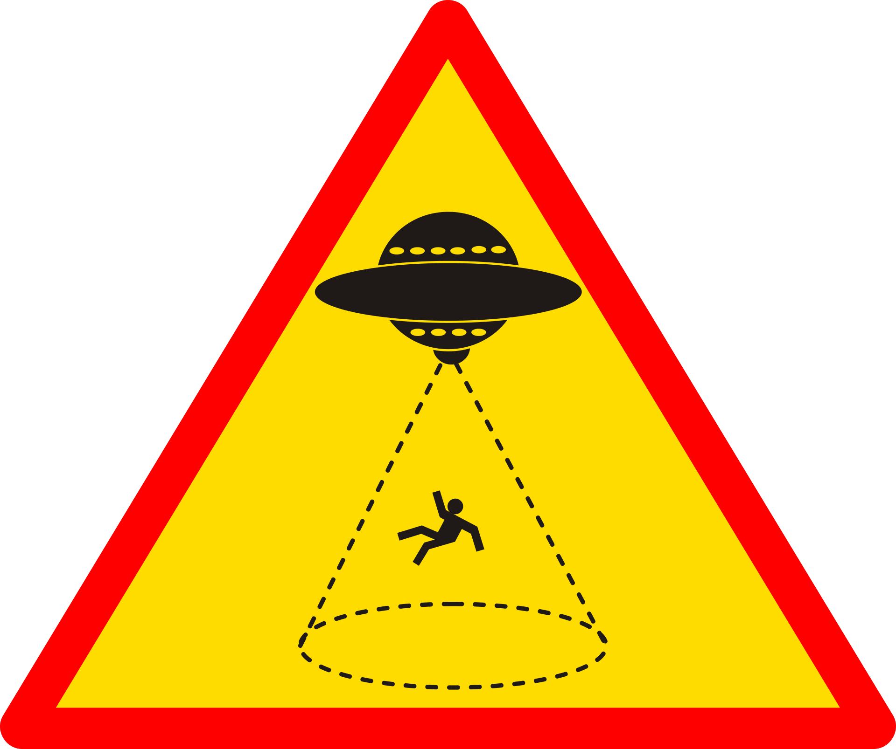
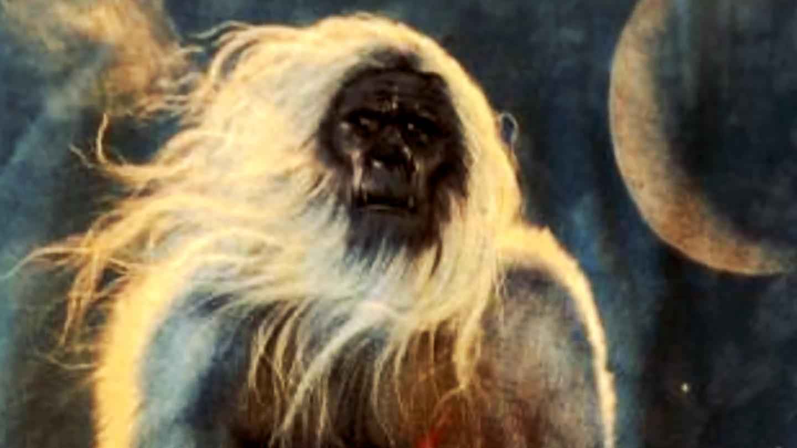
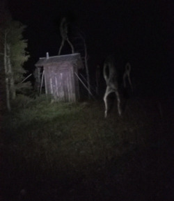
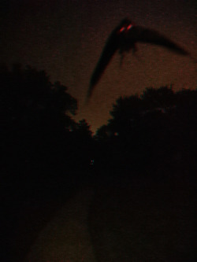
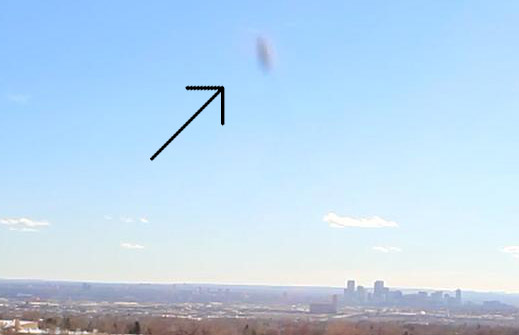
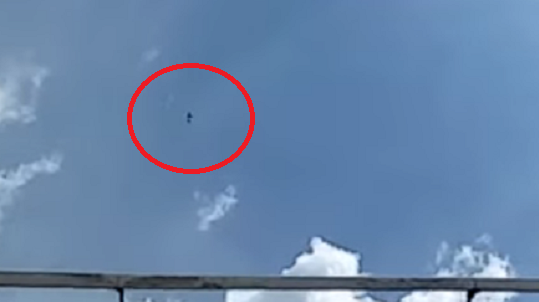

You Too Can Know the Truth! Open Your Eyes!
Site by: Delson Lord Ravenrain
*Disclaimer at the bottom of this page*
You are being told lies! Fake news is the new normal, don’t listen to the man! I have seen with new eyes the reality THEY try to conceal. Who are THEY you ask? The Bureau of Change and Coalescence! Otherwise known as the BCC, THEY want to take what makes the people of the US so great and FORCE us to believe that nothing is out there in the dark night. Don’t let the name fool you! The BCC is hidden deeply in the annals of the government, and their name is directly converse to their true intention. The purpose of the BCC is to directly disrupt the facts that are coming out of the paranormal and extraterrestrial discoveries that are being spread by the brave people in our community.

Need proof? Grab any Kennedy half dollar. Above the eagle on the back are the familiar Latin words, “E Pluribus Unum.” If you add the number of the letters together with the letters in Kennedy you get the number 20. Subtract 20 from the number of states and you get 30. Take that and subtract it from 35 (Kennedy was the 35th president) to get 5. Divide the number of states by 5 and you get 10, WHICH IS THE NUMBER OF DEPARTMENTS IN THE BUREAU OF CHANGE AND COALESCENCE! Coincidence? No! There is no coincidence in the game of disclosure! The proof is there people! You have to believe in your third eye and look past their ruse!

The coverup is vast, as the BCC masters the art lies they make their coverup more convincing by the day. They have scores of highly trained deceivers altering information and silencing those trying to speak the truth. Since the colonization of the English territories in North America the BCC has existed in some shape or form. The native American tribes new of the strange creatures of the darkness and how to avoid them, but the minds of the invading people were too modernized; they were unable to cope with the strangeness that inhabited the world. With all their might they formed progenitor groups of the BCC to hide that strangeness, strangling parts of it that had societies of their own and a will to see those societies thrive. We live on top of the graves of countless cultures… Others, not lucky enough to die in secret wars, toil under our feet…

In the pages of this humble site you will see some of what has been lost and what is being hidden from you. You are not alone! We are not alone! Don’t let them continue their lies! One of their more sinister plots is to distract the populace with one of the most detrimental things to the human body… A poor nights sleep! They invented memory foam technology in 1965, knowing it was hot and uncomfortable. It feels good for the first half-hour, just long enough for you to fall asleep, but THEY DESIGNED IT TO LOSE ITS FIRMNESS AFTER YOUR BODY HEATS IT UP. They actually stole the technology from the reptilians, who are cold blooded, and therefore get A GREAT NIGHT OF SLEEP. They’ll be prepared when they rise up...

Mattis vulputate enim nulla aliquet porttitor lacus luctus accumsan. Eros donec ac odio tempor orci dapibus ultrices in. Elementum tempus egestas sed sed risus pretium quam vulputate. Cursus risus at ultrices mi tempus imperdiet nulla malesuada. Ac tincidunt vitae semper quis lectus nulla at volutpat diam. Faucibus et molestie ac feugiat sed lectus vestibulum. Viverra aliquet eget sit amet. Hac habitasse platea dictumst vestibulum rhoncus est pellentesque elit ullamcorper. Pulvinar mattis nunc sed blandit libero volutpat. Ultricies tristique nulla aliquet enim tortor at auctor urna nunc. Lorem donec massa sapien faucibus et. Lacus sed turpis tincidunt id aliquet risus feugiat in ante. Porttitor eget dolor morbi non arcu risus quis. Ante metus dictum at tempor commodo.
